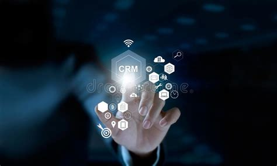
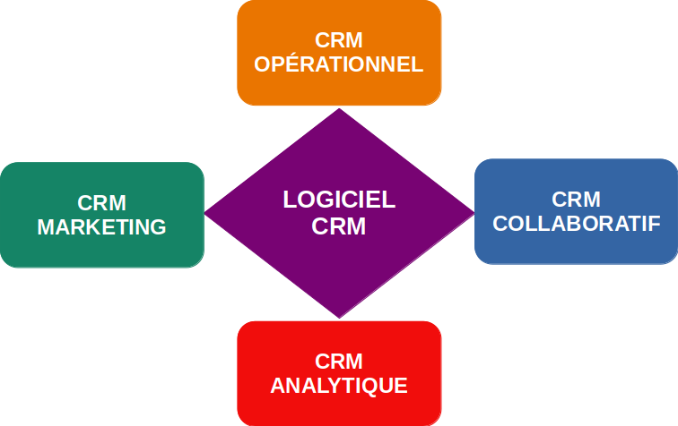

Le CRM est une nécessité incontourable dans un contexte digital.
FMF
Publié le 01/03/2023
Temps de lecture: 13 mins.
TABLE DES MATIÈRES
- INTRODUCTION
- I. C'EST QUOI AU JUSTE UN CRM?
- II. Historique du CRM
- III. CATEGORIES DE CRM
- IV. LES DIFFERENTS TYPES DE LOGICIELS CRM
- V. FONCTIONNALITES D'UN CRM
- VI. ENJEUX D'UN CRM
- VII. AVANTAGES D'UN CRM
- VIII. COMMENT CHOISIR UN CRM POUR SON ORGANISATION?
- IX. DEPLOIEMENT D'UN CRM
- CONCLUSION
- Introduction
- Dans le paysage économique d'aujourd'hui qui est dynamique, concurrentiel et fortement digitalisé, la clé d’une réussite pérenne pour les organisations réside dans l'établissement et le maintien de solides relations avec les clients..
Car, la satisfaction, la fidélité et l'engagement des clients sont des facteurs critiques qui peuvent avoir un impact significatif sur les résultats d'une entreprise. C'est là que les logiciels de gestion de la relation client (CRM ou Customer Relationship Management ) viennent offrir une boîte à outils puissante aux organisations pour gérer efficacement les interactions avec leurs clients et stimuler la croissance.
- I. C'est quoi au juste un CRM?

- L'acronyme anglais CRM signifie "Customer Relationship Management" et celui en français GRC veut dire "Gestion de la Relation Client" est en fait une plateforme technologique conçue pour rationaliser et améliorer les interactions des organisations avec leurs clients tout au long de leurs cycles de vie. Il permet aux à ces dernièes de gérer les informations relatives à leurs clients, de suivre la communication, d'automatiser des tâches, d'analyser des données et, en fin de compte, de favoriser des relations plus personnalisées et plus significatives.
- II. Historique du CRM
- Avant de devenir une plateforme logicielle, le prédécesseur du CRM était une simple application de gestion de contacts dénommée "ACT" et laquelle, été créée en 1987 par Pat Sullivan et Mike Muhney. Le but visé était alors de permettre aux commerciaux de sauvegarder leurs contacts dans un format digital et d'avoir la possibilité d'effectuer des recherches en tant que de besoin. Ce logiciel a subi une profonde métamorphose dans les années 1990, parallèlement à plusieurs avancées technologiques majeures, telles qu'internet et la vulgarisation de l'ordinateur personnel au niveau des sphères de vie des personnes et leurs environnements de travail.
De nos jours, le CRM actuel a aussi énormément évolué avec l'avènement de la révolution digitale pour s'adapter au contexte digital et de ce fait, il a été revisité et articulé autour d'un ensemle de stratégies, de technologies et de processus pour offrir aux organisations une panoplie de possibilités, comme collecter et gérer des informations "clients", suivre la communication, automatiser des tâches, analyser des données et tout cela, dans le but de favoriser des connexions plus personnalisées et significatives avec leurs clients à l'effet, d'en attirer plus, de les fidéliser, de les satisfaire et de les convertir en ambassadeurs potentiels de leurs marques respectives.
- III. Catégories de CRM

- En règle générale, il existe quatre catégories de CRM et chacun d'eux traite des tâches spécifiques. Ce sont:
- Le CRM opérationnel: En plus des fonctions habituelles de CRM (comme le stockage des prospects, des clients et des contrats sur une seule plateforme), les CRM opérationnels mettent l'accent sur l'automatisation, ce qui permet aux organisations de rationaliser les processus de gestion des relations avec les clients.
- Le CRM collaboratif: Un CRM collaboratif permet à chaque équipe d'accéder à des données clients actualisées en un seul endroit et en temps réel. Ces données comprennent des informations marketing (le contenu avec lequel un avec lequel un prospect a interagi, par exemple), les achats effectués par un client et toute communication antérieure avec un membre de l'équipe.
Ce type de CRM permet à chacun de consulter rapidement toutes les interactions passées et de mieux comprendre les besoins et les intérêts de ses clients.
- Le CRM analytique: Ce type de CRM met l'accent sur l'analyse et les rapports. Et l'analyse des données clients qui sont recueillies au fil du temps permet d'améliorer les aspects de l'activité d'une organisation, comme par exemple les campagnes de marketing, les efforts de vente, l'efficacité du support clients, etc.
Les données recueuillies aident donc toute organisation à mieux, dans une seule et même action, cerner une clientèle principale et répondre à des questions telles que les campagnes de marketing qui génèrent le plus de prospects ou le contenu qui peut conduire à un achat.
- Le CRM Marketing: Le CRM marketing intègre généralement des fonctions marketing directement au sein du logiciel. Il comprend aussi des flux de travail automatisés et lesquels, permettent, par exemple, d'envoyer automatiquement un e-mail à un prospect le lendemain du jour où il a cliqué sur un lien dans un courriel de marketing qui lui a été envoyé. Il peut également marquer un prospect comme intéressé lorsqu'il a ouvert un certain nombre des courriels qu'il a reçu.
- IV. Les Différents types de logiciels CRM
- Il existe trois types de logiciels CRM:
- Le CRM Propriétaire: Ce logiciel est un système fermé. C'est en fait un produit enfermé dans une boîte noire. Il s'acquiert par l'achat d'une licence commerciale. Et, l'infrastructure matérielle et logicielle sur laquelle est installé le CRM, se trouve dans les locaux du client.
- Le CRM Open Source: Un logiciel open source signifie que son code source est accessible au public. C'est le code qui fait fonctionner le programme. Ce code source peut être modifié et partagé par les utilisateurs en fonction de leurs besoins. Dans ce cas de figure aussi, l'infrastructure matérielle et logicielles sur laquelle est installé le CRM se trouve dans les locaux du client.
- Le CRM SaaS: Le logiciel SaaS (Software as a Service) est hébergé sur un cloud et est accessible en tant que service en souscrivant un abonnement auprès d'un fournisseur de services cloud, qui assure les opérations de maintenance de l'infrastructure et de mise à jour du CRM.
- V. Fonctionnalités d'un CRM
- Les fonctionnalité d'un CRM peuvent varier d'un éditeur logiciel à l'autre. Mais en règle générale, ils disposent tous de fonctionnalités communes qui sont listées ci-après:
- Gestion des données clients: Les systèmes de CRM stockent et gèrent les informations relatives aux clients, telles que les coordonnées, l'historique des achats, les préférences et l'historique des communications, dans une base de données centralisée. Cela permet aux organisations d'avoir une vision à 360 degrés de chaque client.
- Gestion des contacts et des prospects: Les logiciels de gestion de la relation client (CRM) permettent de suivre et de gérer les pistes et les contacts, ce qui facilite l'identification des clients potentiels et leur prise en charge dans l'entonnoir des ventes.
- Automatisation des ventes: Les systèmes CRM comprennent souvent des fonctions d'automatisation des ventes qui rationalisent les processus de vente, automatisent des tâches telles que l'attribution de prospects et le suivi, et fournissent des outils de prévision des ventes.
- Automatisation du marketing: De nombreuses plateformes CRM offrent des fonctionnalités d'automatisation du marketing pour créer, gérer et suivre les campagnes de marketing, y compris le marketing par courriel, la maturation des prospects et l'analyse.
- Support du service clients: Le CRM peut intégrer des fonctionnalités de service à la clientèle, notamment des systèmes de billetterie, des bases de connaissances et la gestion des cas, afin d'améliorer l'assistance à la clientèle et la résolution des problèmes.
- Analyse et rapports: Le CRM fournit des outils permettant de générer des rapports et d'analyser les données relatives aux clients afin d'obtenir des informations sur le comportement des clients, les performances commerciales et l'efficacité du marketing.
- Intégration: Les systèmes de CRM s'intègrent souvent à d'autres applications professionnelles, telles que le courrier électronique, le calendrier, les plateformes de commerce électronique et les médias sociaux, afin de fournir une vue unifiée des interactions avec les clients sur différents canaux.
- Accès mobile: De nombreuses solutions CRM proposent des applications mobiles ou des interfaces web réactives pour permettre aux équipes de vente et d'assistance d'accéder aux données des clients et d'effectuer des tâches en déplacement.
- Etc.
- VI. Enjeux d'un CRM
- Comme tout logiciel, un CRM comporte des enjeux qu'il faut relever avant de pouvoir en tirer profit. En voici les principaux:
- Qualité des données: Il n'est pas toujours facile de conserver des données précises et à jour sur les clients. Des données incomplètes ou inexactes peuvent conduire à une mauvaise prise de décision et à des efforts de marketing et de vente inefficaces.
- Adoption par les utilisateurs: Il peut être difficile d'amener les employés à adopter pleinement et à utiliser efficacement un logiciel de gestion de la relation client (CRM). Des efforts de formation et de gestion du changement sont souvent nécessaires pour garantir une adoption généralisée.
- Compléxité d'intégration: L'intégration d'un système de gestion de la relation client avec d'autres systèmes et applications peut s'avérer complexe, en particulier dans les grandes organisations dotées de systèmes existants. Des problèmes de compatibilité et de migration des données peuvent survenir.
- Coût: La mise en œuvre des systèmes de gestion de la relation client peut s'avérer coûteuse, notamment en termes de licences logicielles, de matériel, de formation et de maintenance continue. Les petites organisations peuvent trouver difficile d'allouer des ressources à la gestion de la relation client.
- Sécurité et confidentialité: La protection des données des clients et la conformité avec les réglementations en matière de protection des données (Loi 18-07 du 10/06/2018) constituent un défi important pour les implémentations CRM.
- Optimisation et évolutivité: Personnaliser le CRM pour répondre aux besoins spécifiques de l'organisation et l'adapter à la croissance de l'organisation peut être coûteux et s'avérer difficile sans l'expertise adéquate.
- Etc.
- VII. Avantages d'un CRM
- Les principaux avantages d'un CRM sont ceux qui sont listés ci-après. Toutefois, ceci ne constitue pas une liste exhaustive, car en fonction des fonctionnalités dont il est doté, chaque CRM du marché peut offrir moins ou plus d'avantages:
- Données client centralisées: L'une des principales utilités d'un système CRM est sa capacité à consolider les informations client provenant de divers points de contact dans une base de données unique et complète. Ce référentiel centralisé élimine les silos de données et garantit que tous les services concernés ont accès à des données clients précises et à jour. Ceci, à son tour, permet aux employés de prendre des décisions éclairées et de fournir des services personnalisés.
- Amélioration de la communication: Les systèmes CRM facilitent la communication transparente en organisant les e-mails, les appels, les chats et autres interactions en un seul endroit. Cela garantit que chaque membre de l'équipe est sur la même longueur d'onde et a une vue complète de l'historique et des besoins du client. Cette communication améliorée permet d'accélérer les temps de réponse et de résoudre les problèmes plus efficacement.
- Automatisation des tâches routinières: Les systèmes CRM automatisent les tâches de routine telles que la saisie de données, la planification des rendez-vous et les rappels de suivi. Cette automatisation permet non seulement de gagner du temps, mais aussi de minimiser le risque d'erreurs, ce qui permet aux employés de se concentrer sur des activités à plus forte valeur ajoutée qui contribuent à la croissance de l'organisation.
- Personnalisation et ciblage: Comprendre les préférences et les comportements des clients est crucial pour offrir des expériences personnalisées. Les systèmes CRM analysent les données des clients pour identifier les tendances et les modèles, ce qui permet aux organisations d'adapter leurs offres aux besoins individuels. Les campagnes de marketing ciblées basées sur ces données sont plus susceptibles de produire des résultats positifs et de stimuler l'engagement.
- Gestion des ventes et des pipelines: Pour les équipes commerciales, les systèmes CRM sont des outils précieux pour gérer les prospects, les opportunités et le pipeline des ventes. Ces systèmes permettent de hiérarchiser les prospects, de suivre les interactions et de prévoir les tendances des ventes. Ce niveau de visibilité permet de meilleures stratégies de vente et des projections de revenus plus précises.
- Amélioration du service à la clientèle: Un service client efficace est la pierre angulaire de l'utilitaire CRM. Les demandes de renseignements, les plaintes et les commentaires des clients peuvent être suivis et gérés via le système CRM, garantissant ainsi que chaque client reçoit une assistance opportune et satisfaisante. Cela augmente la satisfaction et la fidélité des clients.
- Analyse des données et informations: Les systèmes CRM modernes sont équipés de capacités d'analyse robustes qui transforment les données brutes en informations exploitables. Les organisations peuvent identifier les tendances, évaluer le succès des campagnes marketing, évaluer le comportement des clients et prendre des décisions stratégiques éclairées basées sur cette analyse.
- Évolutivité et croissance: À mesure que les organisations se développent, la gestion des relations avec les clients devient plus complexe. Les systèmes CRM sont conçus pour évoluer aux côtés de l'organisation, en s'adaptant à une clientèle croissante et à des fonctionnalités supplémentaires. Cette évolutivité garantit que les organisations peuvent continuer à offrir des expériences de qualité à mesure qu'elles se développent.
- Etc.
- VIII. COMMENT CHOISIR UN CRM POUR SON ORGANISATION?
- Le choix d'un CRM pour une organisation et ce, quelque soit sa taille et le secteur d'activité auquel elle appartient, doit inéluictablement passer par le respect d'un certain nombre de critères, toutefois la présente liste ne se veut en aucun cas être exhaustive car, selon les besoins et les objectifs de l'organisation qui veut acquérir un CRM, d'autres exigences peuvent s'y ajouter. En général, la plupart des organisations se contentent des critères ci-après listés:
- Définition d'objectifs et de besoins: Commencez par identifier les buts et objectifs spécifiques que vous souhaitez atteindre avec un CRM. Quels sont les problèmes que vous essayez de résoudre ? Quels sont vos indicateurs clés de performance (ICP)? Tenez compte des besoins propres à votre secteur d'activité et à la taille de votre organisation.
- Implication des principales parties prenantes: Faites participer les différents services tels que les ventes, le marketing, l'assistance à la clientèle et l'informatique afin de vous assurer que le CRM répond aux besoins de chacun.
- Allocation d'un budget: Déterminez le montant que vous pouvez allouer au logiciel de gestion de la relation client, y compris les dépenses courantes telles que les abonnements, la formation et l'assistance.
- Options de déploiement: Décidez si vous préférez un système de gestion de la relation client basé sur l'informatique en nuage (SaaS), un système de gestion de la relation client sur site ou une solution hybride. Les systèmes de CRM basés sur l'informatique dématérialisée sont appréciés pour leur évolutivité et leur accessibilité.
- Evolutivité Choisissez un système de gestion de la relation client capable d'évoluer avec votre organisation. Veillez à ce qu'il puisse répondre à vos besoins futurs, tels que l'augmentation du nombre d'utilisateurs ou l'ajout de nouvelles fonctionnalités.
- Capacités d'intégration: Vérifiez si le CRM peut s'intégrer à vos logiciels et outils existants, tels que les plateformes de marketing par courriel, les systèmes de commerce électronique et les logiciels de comptabilité. L'intégration est essentielle à la cohérence des données.
- Conviviabilité: Évaluez l'interface utilisateur et la facilité d'utilisation. Le CRM doit être intuitif afin que votre équipe puisse l'adopter rapidement et en tirer le meilleur parti.
- Accessibilité mobile: Assurez-vous que le CRM propose des applications mobiles ou un design web réactif, permettant à votre équipe d'accéder aux informations et de les mettre à jour lorsqu'elle est en déplacement.
- Personnalisation: Recherchez un CRM qui vous permette de l'adapter aux besoins spécifiques de votre organisation, y compris des champs personnalisés, des flux de travail et des rapports.
- Sécurité et conformité des données: Confirmez que le CRM est conforme aux réglementations en matière de protection des données (par exemple, RGPD, etc) applicables à votre secteur d'activité et à votre situation géographique.
- Assistance et formation sur le logiciel:Évaluez le niveau d'assistance à la clientèle fourni par le fournisseur, les ressources de formation et la documentation du CRM.
- Réputation de l'éditeur du CRM et commentaires de la clientèle: Étudiez la réputation du fournisseur de CRM et lisez les avis d'autres organisations qui ont mis en œuvre le système.
- Période d'essai: Dans la mesure du possible, profitez des essais gratuits ou des démonstrations pour vous familiariser avec le système de gestion de la relation client avant de prendre une décision définitive.
- Coût total de possession: Lors du calcul du coût total de possession, il faut tenir compte non seulement du coût initial du logiciel, mais aussi des dépenses courantes telles que les frais d'abonnement, la personnalisation et l'assistance.
- Retour d'informations des utilisateurs du CRM: Rétroaction des utilisateurs: Recueillez les commentaires des utilisateurs potentiels au sein de votre organisation afin de comprendre leurs préférences et leurs besoins.
- Migration des données: Planifier la migration des données clients existantes vers le nouveau système de gestion de la relation client et s'assurer que le système de gestion de la relation client choisi prend en charge ce processus.
- Stratégie à long terme: Réfléchir à la stratégie CRM à long terme de votre organisation et à la manière dont elle s'aligne sur vos objectifs commerciaux et vos plans de croissance.
- Retour sur investissement: Estimez le retour sur investissement (ROI) que vous espérez obtenir avec le CRM. Calculez l'impact sur le chiffre d'affaires, la satisfaction des clients et l'efficacité opérationnelle.
- IX. Déploiement d'un CRM
- Quatre piliers critiques sont à prendre sérieusement en considération lors d'un déploiement de CRM. Ce sont:
- Le Personnel: Le personnel est un pilier important pour une mise en œuvre réussie de la gestion de la relation client. Si le personnel n'est pas engagé, efficace et bien formé au CRM, les efforts déployés pour augmenter la productivité risquent d'être vains. Malheureusement, dans de nombreuses organisations, le personnel reçoit moins d'attention que n'importe quel autre pilier. On part du principe que si les autres processus ou piliers sont en place, la main-d'œuvre sera naturellement optimale. Chaque membre du personnel doit être formé à l'utilisation efficace du système de gestion de la relation client. La formation peut comprendre des cours en ligne, la lecture de documents sur les processus, etc. L'encadrement supérieur doit faire preuve de la même volonté et du même soutien à l'égard du personnel pendant la période de formation. Le passage d'un système manuel à un système en ligne avec tous les processus représente un changement considérable. La direction doit donc accorder une plus grande attention à son personnel si elle veut que la mise en œuvre du système de gestion de la relation client soit couronnée de succès.
- La Stratégie: Les stratégies sont importantes pour qu'une organisation puisse croître et atteindre la position souhaitée. Et l'un des facteurs les plus importants pour le succès des stratégies est leur mesure. Les stratégies conduisent à la conception de la feuille de route à venir et cela conduit à la réalisation des objectifs. Il est important pour une organisation de savoir si la stratégie qu'elle a conçue a été couronnée de succès ou non et pour ce faire, elle a besoin d'un outil d'application métier comme un logiciel CRM pour mesurer les rôles, les tâches et calculer les résultats.
- Les Processus: Les processus sont les méthodes qui aident les organisations à atteindre leurs objectifs. Ces derniers doivent être clairement définis, simples à comprendre et faire l'objet d'un suivi constant. À certains égards, les processus sont la partie la plus difficile des piliers du CRM à maîtriser. Le suivi des processus devrait donc être effectué pour les maintenir sur la bonne voie et cela devrait être fait quotidiennement, non seulement pour découvrir où les lacunes se sont produites, mais aussi pour analyser quelles tâches ont conduit à des résultats positifs afin qu'ils puissent être reproduits à l'avenir.
- La Technologie: Le quatrième et dernier pilier d'une mise en œuvre réussie du CRM est la technologie. La technologie est une partie importante de la mise en œuvre d'un CRM. Être à jour avec les technologies actuelles ou les besoins des clients aide grandement à formuler une bonne stratégie de vente et de marketing.
- Conclusion
- L'impact de la dynamique de la révolution digitale a transformé la manière traditionnelle avec laquelle les organisations avaient l'habitude de faire du business. Car, l'introduction du marketing digital a complétement changé la donne en plaçant les clients au centre de leurs stratégies du fait que ces derniers exigent des interactions personnalisées et un service exceptionnel.
Alors pour répondre à leurs désiratas, les organisations s'appuient sur des systèmes CRM qui leur offrent les outils dont elles ont besoin pour s'adapter au nouveau contexte digitalisé et en perpétuelle évolution et y exceller.
En fait, si le CRM était à ses débuts un effet de mode, il ne l'est plus au jour d'aujourd'hui car, il est devenu une nécessité incontourable qui s'impose pour tous ceux qui souhaitent prospérer dans une économie gloabalisée, digitalisée et surtout centrée sur le client.